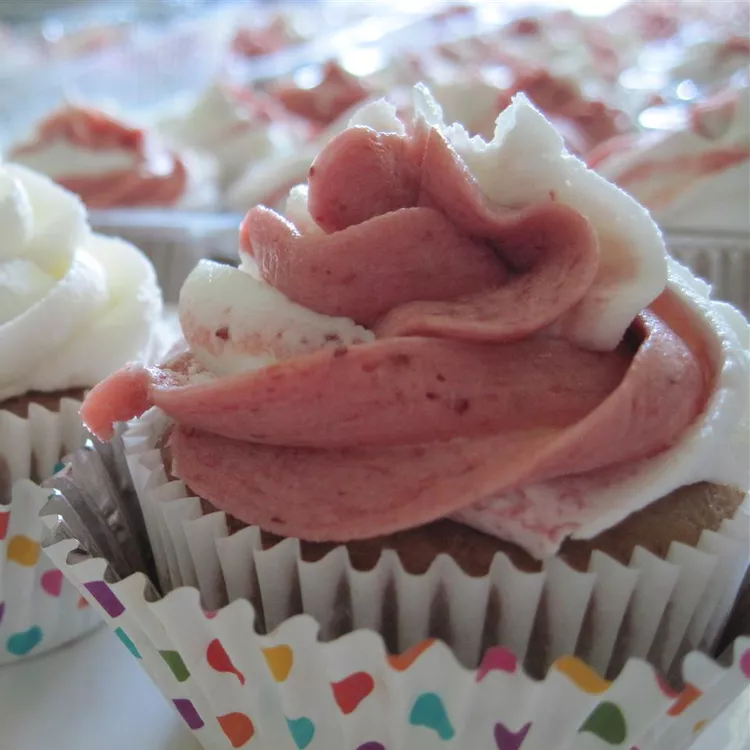

REALLY Real Strawberry Cupcakes

A REALLY Real Strawberry Cupcakes recipe
I've been messing around trying to make a perfect strawberry cupcake to go with the Real Strawberry Frosting I developed a couple of years ago.
It's been a long road and lots of cupcakes tested and tasted along the way.
The trick was NOT using puree as I do when making the frosting.
Rather, grinding freeze-dried strawberries into a powder brought this cupcake recipe out of my test kitchen and into my recipe box!
I am so pleased with the results!
Ingredients
- 1 ¼ ounces freeze-dried strawberries
- ¾ cup all-purpose flour
- ¾ cup cake flour
- 1 ½ teaspoons baking powder
- ¼ teaspoon baking soda
- ½ teaspoon salt
- ½ cup unsalted butter, room temperature
- 1 ⅓ cups white sugar
- 3 eggs, room temperature
- 1 teaspoon vanilla extract
- ⅔ cup whole milk, room temperature
Directions
-
Preheat oven to 350 degrees F (175 degrees C).
-
Line muffin tins with 20 cupcake liners (for mini cupcakes, line 72 mini muffin tins).
-
Grind strawberries into a fine powder using a coffee grinder or food processor.
-
Whisk strawberry powder, all-purpose flour, cake flour, baking powder, baking soda, and salt together in a bowl.
-
Beat butter and sugar in a bowl with an electric mixer until light and fluffy. Mixture should be noticeably lighter in color.
-
Add room-temperature eggs one at a time, allowing each egg to blend into butter mixture before adding the next.
-
Beat in vanilla extract.
-
Stir flour mixture, alternately with the milk, into butter mixture until just incorporated. Fill lined tins with cupcake batter.
-
Bake in preheated oven until cupcakes spring back when gently touched with a fingertip or a toothpick inserted in the center comes out clean,
16 to 18 minutes for regular cupcakes, 8 to 10 minutes for mini cupcakes.